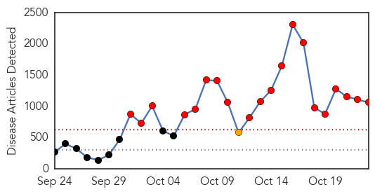
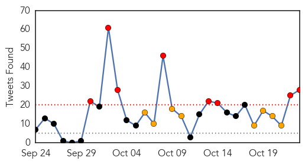
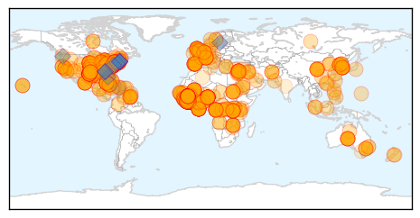

Toggle navigation
Early Warning
Daily Alerts
Ebola
Oct 23, 2014
Compare to:
-
Dengue Fever
Hemmorhagic Fever
Mold/Fungal Infection
Influenza
Meningitis
Pertussis / Whooping Cough
Middle East Respiratory Syndrome
Cholera
Hepatitis
Chikungunya
Yellow Fever
Bubonic Plague
West Nile Virus
Swine Flu
Measles
Unknown
Mumps
30 Day Trends
Web: 20
alerts
, 1
warnings
Twitter: 17
alerts
, 5
warnings
Top Articles:
Showing top 50 articles...
1.000
Family Says Nurse Amber Vinson Is Free Of Ebola
1.000
Family Says Nurse Amber Vinson Is Free Of Ebola
1.000
A Politically Incorrect Approach
1.000
Doctor who worked in Africa first Ebola case in NYC
1.000
Understanding Ebola
1.000
American doctor tests positive for Ebola
1.000
American doctor tests positive for Ebola
1.000
Ebola death toll edging to 4,900 mark: WHO
1.000
NunatsiaqOnline 2014-10-23: NEWS: Nunavik to follow Quebec’s response plan for Ebola virus
1.000
Family Says Nurse Amber Vinson Is Free Of Ebola : The Two-Way : NPR
1.000
Ebola Panic Proving To Be Overblown
1.000
Health Department Says Ebola Isn’t a Threat in Shelby County
1.000
U.S. Cameraman Treated for Ebola 'Free' of the Virus
1.000
The 9 Deadliest Viruses on Earth
1.000
North Korea 'to close its borders to tourists' due to concerns over the spread of Ebola
1.000
Ebola outbreak: Quarantine camps in West Africa at breaking-point
1.000
How Many People Have Really Died From Virus?
1.000
Doctor tests positive for Ebola in New York City
1.000
Your Ebola Questions, Answered
1.000
Everything You Need To Know About Ebola
1.000
Latest Updates N.Y.C. Says Hospital Testing Doctor With Ebola-like Symptoms
1.000
Doctor who worked in Africa first Ebola case in NYC
1.000
Ebola hits Mali for first time as girl, 2, tests positive for disease
1.000
Doctor who worked in Africa first Ebola case in NYC
1.000
Ebola latest: Amber Vinson improves as patients avoid Dallas hospital
1.000
Ebola Today: NYC Doctor Tests Positive for Ebola
1.000
Dallas Nurses Infected With Ebola Are Improving
1.000
Local facilities say they're prepared for Ebola
1.000
Family Says Nurse Amber Vinson Is Free Of Ebola
1.000
Family Says Nurse Amber Vinson Is Free Of Ebola
1.000
Calm down, it’s just Ebola
1.000
Mayor Announces City is Prepared for Ebola :: Stamford, CT
1.000
Family Says Nurse Amber Vinson Is Free Of Ebola
1.000
Latest Developments In The Ebola Story
1.000
Family Says Nurse Amber Vinson Is Free Of Ebola
1.000
Ebola Nurse Amber Vinson Now ‘Free’ of Virus, Family Says
1.000
Radnor police will be prepared for unlikely Ebola outbreak
1.000
Family Says Nurse Amber Vinson Is Free Of Ebola
1.000
Family Says Nurse Amber Vinson Is Free Of Ebola
1.000
CHRONOLOGY-Worst Ebola outbreak on record tests global response
1.000
First case of Ebola confirmed in Mali: Health Ministry
1.000
Family Says Nurse Amber Vinson Is Free Of Ebola
1.000
Family Says Nurse Amber Vinson Is Free Of Ebola
1.000
WHO holds two-day emergency meeting on Ebola
1.000
Ebola Outbreak: Ways to help
1.000
Risks and Realities
1.000
Family Says Nurse Amber Vinson Is Free Of Ebola
1.000
CHRONOLOGY-Worst Ebola outbreak on record tests global response
1.000
5-year-old at Bellevue leaving isolation
1.000
5-year-old at Bellevue leaving isolation
Top Tweets:
0.991
Sierra Leone hasn't stopped spread of Ebola. Still engulfed in the outbreak.
0.985
RT: Dr Fukuda: Ebola remains a public health emergency of intl concern: WHO Intl Health Regulations Emergency Committee on Ebola in W…
0.930
.@WHO says Ebola outbreak continues to spread in West Africa http://t.co/7BBc7m3cNP
0.920
Interesting! German MDs who treated an medevac'd Ebola patient tested body fluids for virus after he stopped having virus in his blood 1/2
0.884
Our next EbolaFact: A person infected with Ebola virus is not contagious until symptoms appear. http://t.co/MQUpd0zRC4
0.881
$10,000 compensation to be paid to families of health workers who died in Ebola treatment centres in Guinea - govt Ebola chief.
0.880
Ebola threatens Liberian food security; Summary of Ebola candidate vaccines. HealthSecurity http://t.co/H1JhGDbj22
0.844
RT: First case of Ebola confirmed in Mali: health minister
0.833
Borders aren't force fields. Until Ebola is contained in Guinea, Liberia & Sierra Leone,the virus will find its way to other countries.
0.827
Francophone medical personnel needed: @WHO says French-speaking medical staff needed to help fight Ebola in Guinea.
0.819
RT: ECDC guide on assessing & planning medical air evacuations to Europe for Ebola patients & people exposed to Ebola http://t.co…
0.814
RT: Dr Fukuda: Ebola cases continue to increase exponentially in Guinea, Liberia, and Sierra Leone; the situation remains of great co…
0.814
RT: Dr Fukuda: Ebola cases continue to increase exponentially in Guinea, Liberia, and Sierra Leone; the situation remains of great co…
0.814
RT: Borders aren't force fields. Until Ebola is contained in Guinea, Liberia & Sierra Leone,the virus will find its way to…
0.790
Need vs Reality: Liberia needs 2690 Ebola treatment beds, has 620 (23%). Sierra Leone needs 1198, has 346 (29%) Guinea needs 260, has 160.
0.776
The dog in Dallas has tested negative for Ebola.
0.771
Dallas nurse Amber Vinson free of Ebola virus http://t.co/p3Zh8XxZUW
0.757
Sierra Leone: @UNBanbury & @UNMEER Sierra Leone Ebola Crisis Manager Amadu Kamara brief the press on EbolaResponse http://t.co/wtrjc2X8bB
0.756
Could it be Ebola? New for healthcare workers: patient care checklist for patients under investigation for Ebola: http://t.co/gBFhKhPoRu
0.748
2/3 Man shed viable virus in urine up to 9 days after Ebola had cleared from his blood. PCR testing showed virus in sweat until day 40
0.738
AFD Blog `@ECDC_EU: Management Of Contacts Of Ebola Virus Disease Cases In The EU' http://t.co/2WhBBWnj46
0.719
RT: The best way to protect Americans from Ebola is to stop the outbreak in West Africa. http://t.co/NW1D0ugFIB CDCchat
0.718
RT: Could it be Ebola? New for healthcare workers: patient care checklist for patients under investigation for Ebola: http://t.co/…
0.707
RT: spread of Ebola remains "exponential" in Liberia/Guinea/Sierra Leone, says Keiji Fukuda, WHO Assistant Director, at pre…
0.685
U.S. to Monitor Travelers From Ebola-Hit Nations for 21 Days http://t.co/hj4hqcTtQj
0.680
Currently there has been no report of dog to human transmission or showing symptoms of Ebola
0.680
Currently there has been no report of dog to human transmission or showing symptoms of Ebola
0.674
RT: Women are on the frontlines in Liberia providing care & working to change deadly course of Ebola outbreak http://t.c…
0.641
.@WHO 's Keiji Fukuda say Emergency Committee was struck by how few Ebola exported cases have been seen up till now.
0.628
A Possible Ebola Outbreak in New York Follow for updates http://t.co/F3BUahSY3R
0.616
Ebola en Guinée: l'ancien PM Cellou Dalein Diallo appelle à l'assistance technique http://t.co/gU02ShXdWg
0.609
RT: Ebola response teams in West Africa are depending on you to help map the region: http://t.co/4aNPPJuAyW by
0.601
Our next EbolaFact is about whether a person can spread Ebola without symptoms. http://t.co/N4DISIoo2G
0.598
.@WHO emergency committee says countries hosting mass gatherings/meetings should not bar people from Ebola affected nations from attending.
0.596
Nightmarish RT: @Crof: Ebola in Liberia: Crematorium paralyzes Boystown http://t.co/h586hkk7iy
0.595
Health workers, do you know when to think Ebola, evaluate the patient & consult w/public health? New fact sheet: http://t.co/gBFhKhPoRu
0.593
Signs of Ebola incl fever, headache, muscle pain, diarrhea, vomiting, stomach pain, or unexplained bleeding.
0.583
RT: Barack Obama appelle à plus « d’engagements fermes » pour lutter contre le virus Ebola. Lire la suite: http://t.co/8K…
0.563
RT: Health workers, do you know when to think Ebola, evaluate the patient & consult w/public health? New fact sheet: http://t.co/g…
0.561
The person NYC is evaluating for Ebola is a healthcare worker who recently returned one of the 3 affected countries. hopeitsmalaria
0.545
RT: Dr. David Spencer of admitted 2 Bellevue in NYC 2day, poss Ebola. Recently home frm Guinea. Had self-isolatd…
0.521
What's behind the drop in Ebola cases in Liberia? @itsjina reports for http://t.co/coqOvzGzxf
Web/News Articles

Tweets

Article Locations

Article Confidences